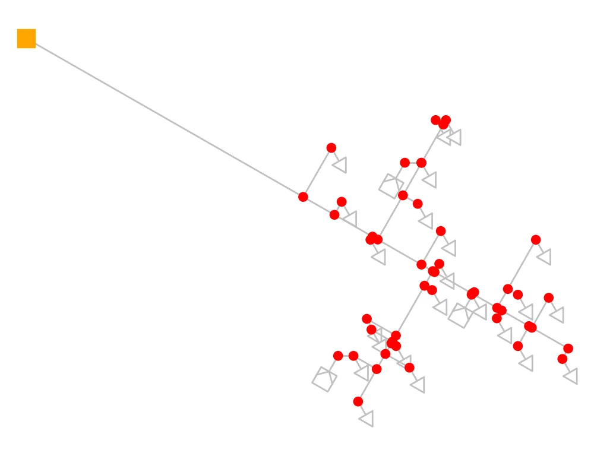
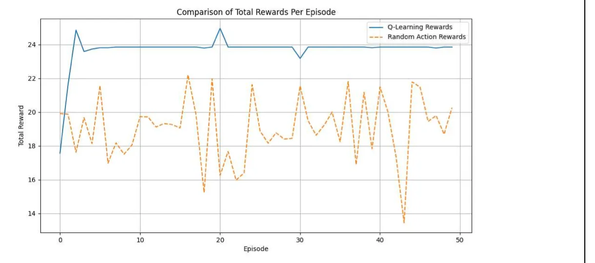

Gas network resilience with reinforcement learning
My BEng individual research project: a Q-learning agent in a pandapipes simulation that learned where to add gas sources during cold-spell demand spikes, bringing junction pressures back to within 10% of the reference.
- Context
- BEng Mechanical Engineering individual research project, University of Bristol
- My part
- Sole author
- Year
- 2024
- Stack
- Python, pandapipes, NumPy, pandas, matplotlib, a Q-learning agent written from scratch
- Status
- Complete
- Links
- Code on GitHub · Report (PDF)

- ±10% Pressure band reached Junction pressures brought within 10% of the external grid's reference after learning
- 50 Training episodes compared Total reward per episode, Q-learning against random actions
Problem
Cold spells push gas demand up and can drop pressures at network junctions below safe levels. The aim was to learn which interventions, adding a gas source at a chosen location and flow rate, bring the pressure back fastest with the fewest changes.
Approach
I built the network in pandapipes with junctions, pipes, sinks for demand and an external grid as the fixed-pressure reference, then created cold-spell scenarios by raising demand with a randomly sampled increase factor. A Q-learning agent with epsilon-greedy exploration chose which source to add, and its reward pushed the network pressure towards a threshold and penalised violations.
Key decision: use the lowest junction pressure as the state
Q-learning needs a small, discrete state, so instead of the full pressure field I used the minimum pressure across all junctions, split into ranges. It is the number that decides whether anyone loses supply, and it kept the problem small enough to learn.
Results
After learning, pressures across the junctions followed the external grid's reference closely and stayed within 10% of it. The agent's reward per episode rose quickly and stayed above random action selection, and over time it favoured a small set of source locations and flow rates.

Limitations and next steps
- Using the minimum pressure as the state loses detail about the rest of the network, and a continuous-state method such as a Deep Q-Network would keep it.
- The simulation allowed several sources at one location, which is a simplification of a real network.
- Next steps: a wider action space with free source placement, and control of valves.